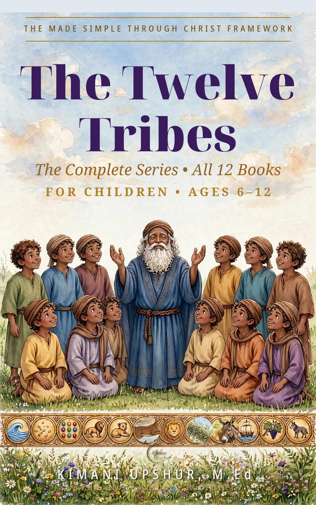

The Books
All twelve books in the collection's order — one complete book for each of the twelve sons of Jacob, in their Genesis 35 birth order.
Reuben: The Brother Who Tried to Save Joseph
Twelve Tribes of Israel, Book 1
by Kimani Upshur, M.Ed.
Simeon: The Brother Who Waited in Egypt
Twelve Tribes of Israel, Book 2
by Kimani Upshur, M.Ed.
Levi: The Tribe That Carried God's House
Twelve Tribes of Israel, Book 3
by Kimani Upshur, M.Ed.
Judah: The Lion's Tribe
Twelve Tribes of Israel, Book 4
by Kimani Upshur, M.Ed.
Dan: The Tribe of Samson the Strong
Twelve Tribes of Israel, Book 5
by Kimani Upshur, M.Ed.
Naphtali: The Doe Set Free
Twelve Tribes of Israel, Book 6
by Kimani Upshur, M.Ed.
Gad: The Fighters of Gilead
Twelve Tribes of Israel, Book 7
by Kimani Upshur, M.Ed.
Asher: The Tribe of the Full Table
Twelve Tribes of Israel, Book 8
by Kimani Upshur, M.Ed.
Issachar: The Tribe That Understood the Times
Twelve Tribes of Israel, Book 9
by Kimani Upshur, M.Ed.
Zebulun: The Tribe by the Sea
Twelve Tribes of Israel, Book 10
by Kimani Upshur, M.Ed.
Joseph: The Tribe of the Fruitful Branch
Twelve Tribes of Israel, Book 11
by Kimani Upshur, M.Ed.
Benjamin: The Beloved Youngest Brother
Twelve Tribes of Israel, Book 12
by Kimani Upshur, M.Ed.